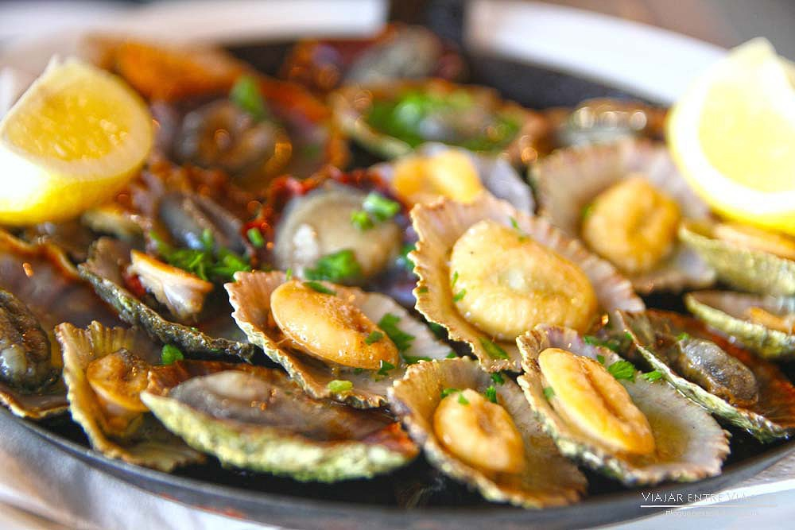
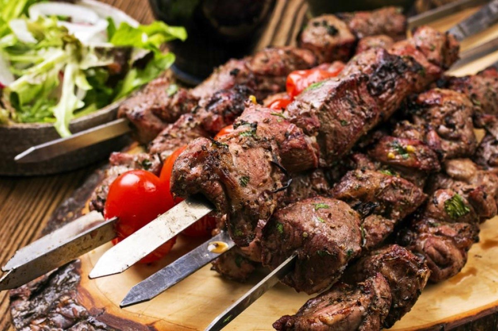
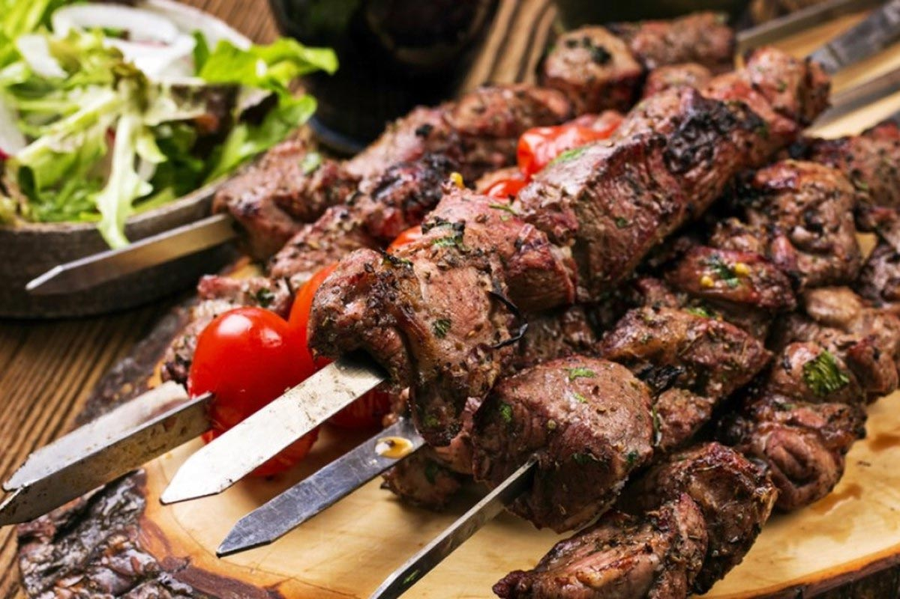

Gastronomy in FunchalTo immerse yourself in the history and culture of this Atlantic capital, you have to explore the richness of Funchal's gastronomy. Made up of flavor, tradition and excellent regional products, some of Madeira's typical dishes have been refined over centuries. From the wide variety of traditional recipes, we can highlight, for example, the famous "espetada" (kebab) on a laurel stick, the "carne de vinho e alhos" (meat in wine and garlic), the "peixe-espada preto" (black scabbard fish), the irresistible "lapas" (limpets) and "caramujos" (snails) or the "bolo do caco", which has practically become a Madeiran trademark. However, if the traditional Madeiran cuisine has some very seductive arguments for food lovers, what about the contemporary gastronomy that currently occupies a prominent place in the archipelago's capital? Funchal's best restaurants, some of which have won international awards, offer a unique journey through the island's flavors. Without ever dispensing with their regional products of sublime quality, renowned chefs bring the sophistication and elegance of haute cuisine to the city of Funchal. Feed your body and soul with Funchal's gastronomic offer! |

 

|